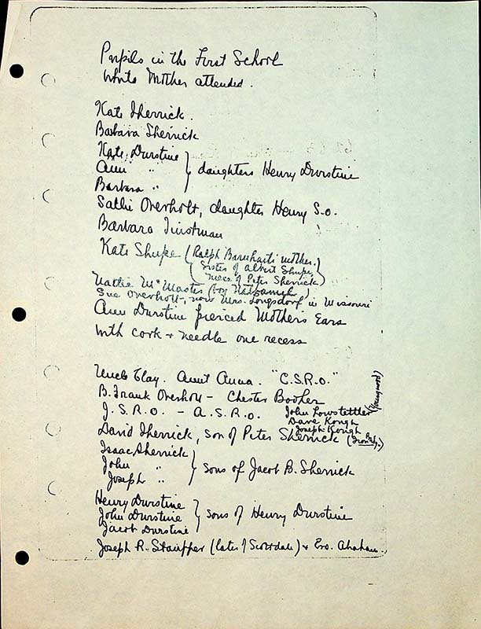

Kate Sherrick
Barbara Sherrick
Kate Durstine }
Ann Durstine }Daughters Henry Durstine
Barbara Durstine}
Sallie Overholt, daughter Henry S.O
Barbara Tinstman
Kate Shupe (Ralph Barnharts’ mother) (sister of Albert Shupe) (niece of Peter Sherrick)
Nattie McMasters
Sue Overholt, now Mrs. Longsdorf in Missouri
Ann Durstine pierced mothers’ ears with cork & needle one recess
Uncle Clay, Aunt Anna, “C.S.R.O”, B. Frank Overholt- Chester Booher, J.S.R.O- A.S.R.O. John Lowstettler (Youngwood) Dave Kough, Joseph Kough
David Sherrick, son of Peter Sherrick (from Bridge.)
Isaac Sherrick
John Sherrick } Sons of Jacob B. Sherrick
Joseph Sherrick
Henry Durstine
John Durstine } Sons of Henry Durstine
Jacob Durstine
Joseph R. Stauffer (later of Scottdale) & bro Abraham